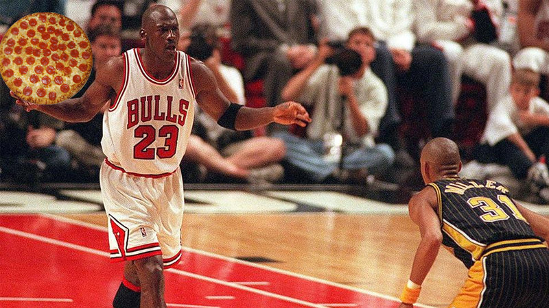

Pizza of Michael Jordan

Description
Tasty Air Pizza by former baseball player Michael Jordan
This pizza isn't like any other pizza.
Ingredients
- 4 cups of all-purpose flour
- 1 pair of Air Jordans
- 1 tsp sugar
- 1 packet (2 ¼ tsp) of active dry yeast
- 2 tsp salt
- 1 ½ cups warm water (not too hot, just like Jordan's shooting streak)
- 2 tbsp olive oil (for smoothness, like MJ's moves on the court)
Steps
- In a large mixing bowl, dissolve the sugar in warm water. Sprinkle the yeast over the top and let it sit for about 5 minutes
- To the yeast mixture, add the olive oil, salt, and gradually start adding flour, one cup at a time, until a dough starts to form.
- Turn the dough out onto a floured surface and knead it with your hands for about 10 minutes
- Cover it with a clean towel and let it rise in a warm place for about 1 hour
- Shape the dough into a ball, then roll it out into your desired pizza shape on a floured surface
- Give the dough a quick pre-bake (about 3-5 minutes) to firm up slightly
- Remove the dough from the oven, add your pair of Air Jordans, and bake for another 10-15 minutes